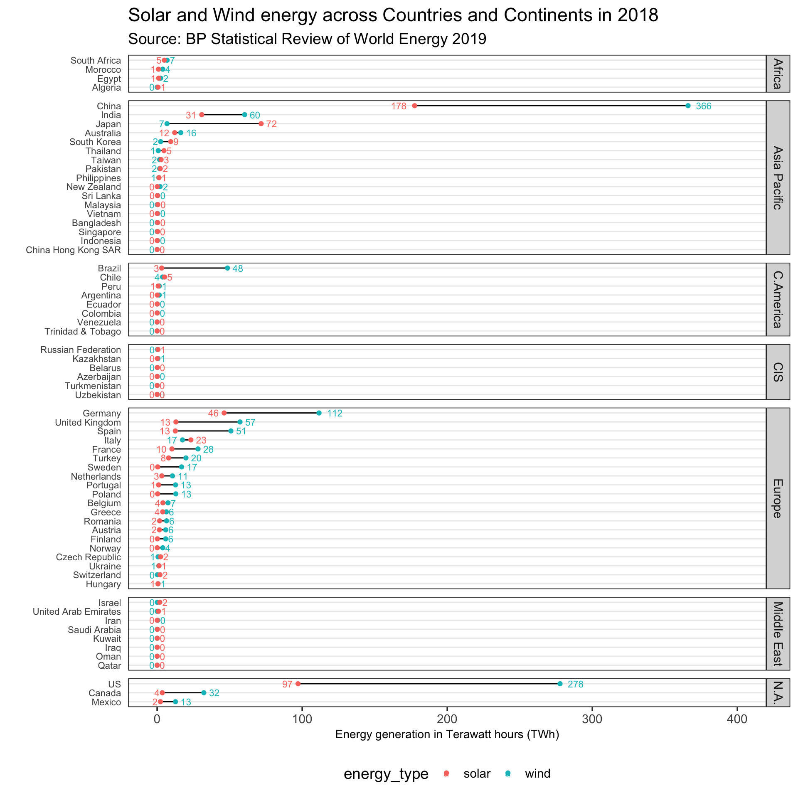
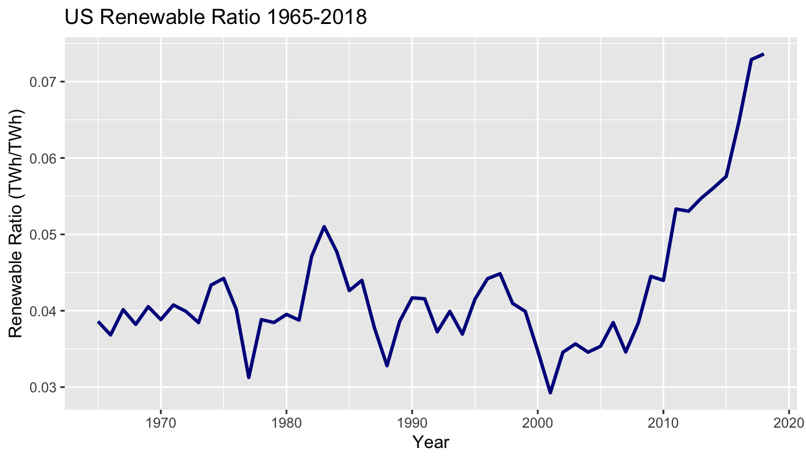
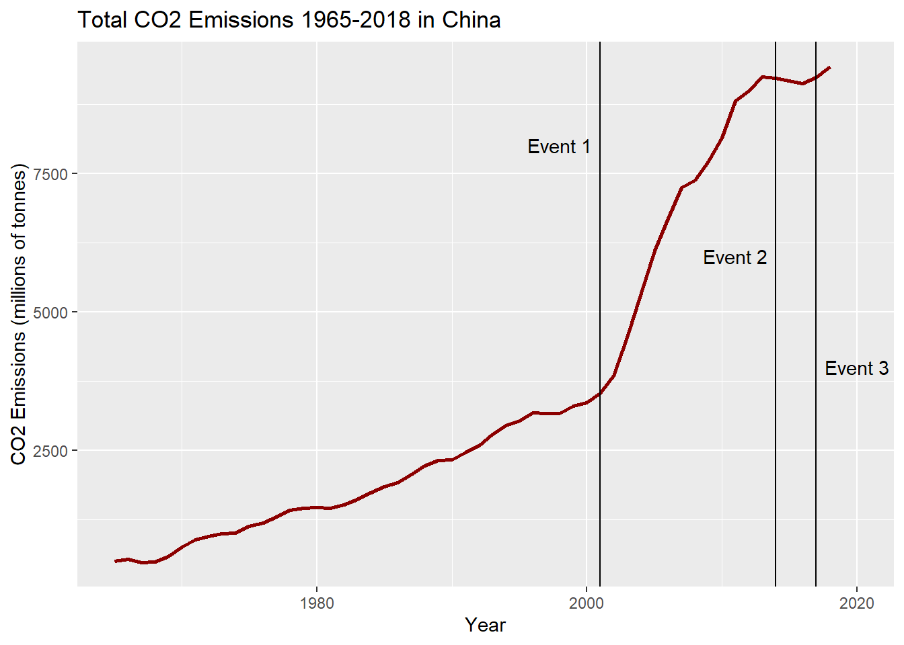
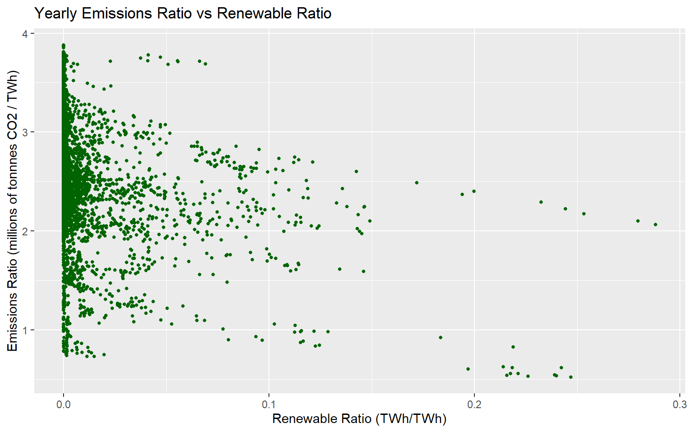

Chapter 5 Results
5.1 Emissions and Renewables
Overall, CO2 emissions have been steadily increasing across the globe.
df %>%
group_by(year) %>%
summarise(total_co2 = sum(co2)) %>%
ggplot(aes(x=year, y=total_co2)) +
geom_line(color="tan4", size=1) +
ggtitle("Total CO2 Emissions 1965-2018") +
labs(x = "Year", y = "CO2 Emissions (millions of tonnes)") 
Focusing on a specific country, we can see that the United States’ CO2 emissions have also been increasing, with slight occasional drops.
ggplot(df[df["country"] == "United States",], aes(x=year, y=co2)) +
geom_line(color="darkred", size=1) +
ggtitle("US CO2 Emissions 1965-2018") +
labs(x = "Year", y = "CO2 Emissions (millions of tonnes)") 
Intuitively, the increase in emissions correlates with the growth of the United States. As population and industry increases, emissions end up increasing due to the increased power demand of the country. However, if we look at the amount of CO2 generated for each unit of power produced for the US, a different image appears.
ggplot(df[df["country"] == "United States",], aes(x=year, y=emission_ratio)) +
geom_line(color="darkgreen", size=1) +
ggtitle("US CO2 Emissions Ratio 1965-2018") +
labs(x = "Year", y = "CO2 Emissions Ratio (millions of tonnes/TWh)") 
This plot shows that the United States’ emissions ratio (millions of tonnes of CO2 emitted per each TWh generated) has been decreasing throughout time. This decrease implies that the US is becoming more CO2 efficient when generating power and can be due to a variety of factors, such as switching to more renewable energy sources and increaseing the efficiency of both renewable and non-renewable energy generation. We can see the relationship between the decreasing emission ratio and switching to renewable energy sources by plotting the US’s renewable ratio, which is the percent of energy consumed that was generated from renewable sources.
ggplot(df[df["country"] == "United States",], aes(x=year, y=renew_ratio)) +
geom_line(color="darkblue", size=1) +
ggtitle("US Renewable Ratio 1965-2018") +
labs(x = "Year", y = "Renewable Ratio (TWh/TWh)") 
The sharp increase in the US’s renewable energy usage around 2010 seems to match with the sharper decrease in the emissions ratio. These plots show that while the US is still emitting large amounts of CO2, they are making changes to reduce the amount of CO2 released during power generation.
Interestingly, this relationship between the renewable ratio and emissions ratio appears not just in the US, but across the globe. The plot below plots each country’s yearly emissions ratio versus their renewable ratio. There is a noticeable downward trend in the plot, suggesting that as a country’s renewable ratio increases (meaning they switch to more renewable energy sources), their emissions ratio decreases (meaning they release less CO2 per unit power generated).
ggplot(df, aes(x=renew_ratio, y=emission_ratio)) +
geom_point(color="darkgreen", size=1) +
ggtitle("Yearly Emissions Ratio vs Renewable Ratio") +
labs(x = "Renewable Ratio (TWh/TWh)", y = "Emissions Ratio (millions of tonnnes CO2 / TWh)") 
Additionally the large number of points on the left side of the plot is likely a result of having a low renewable ratio.